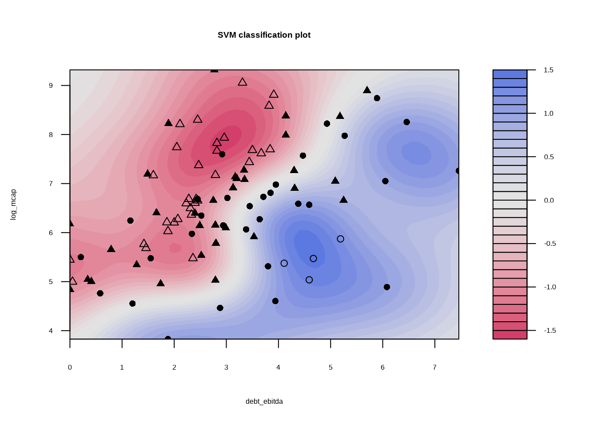
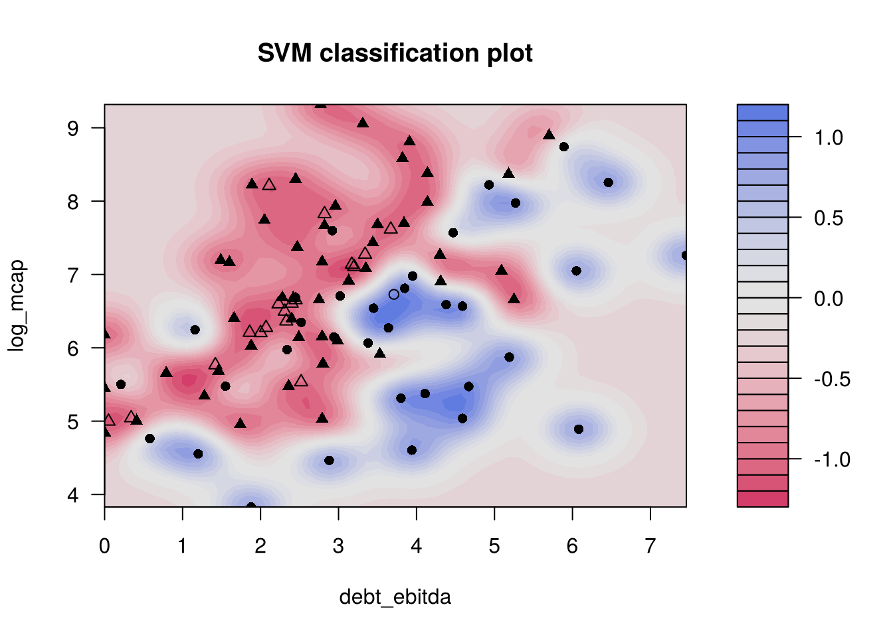
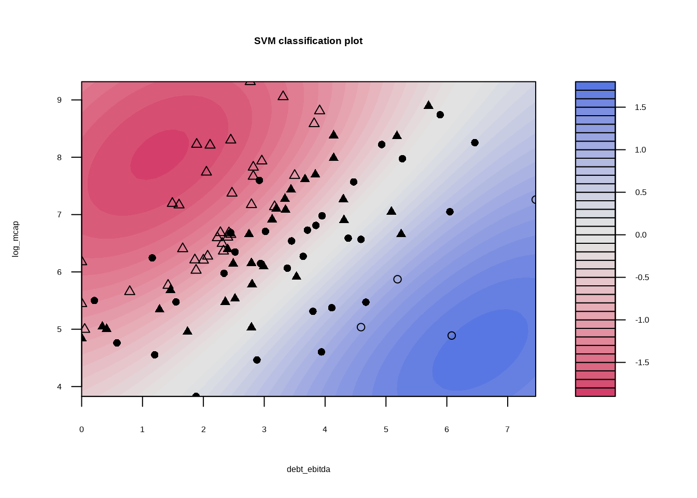
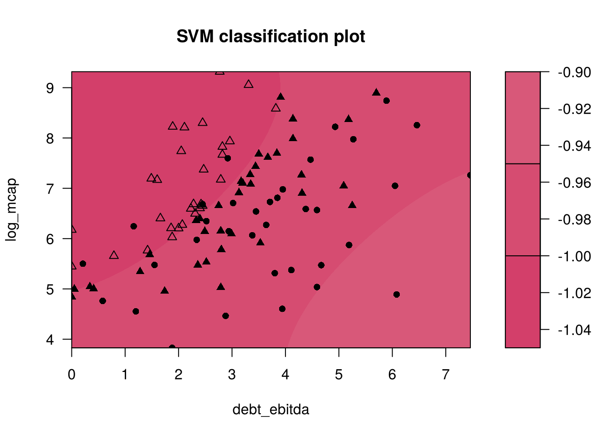
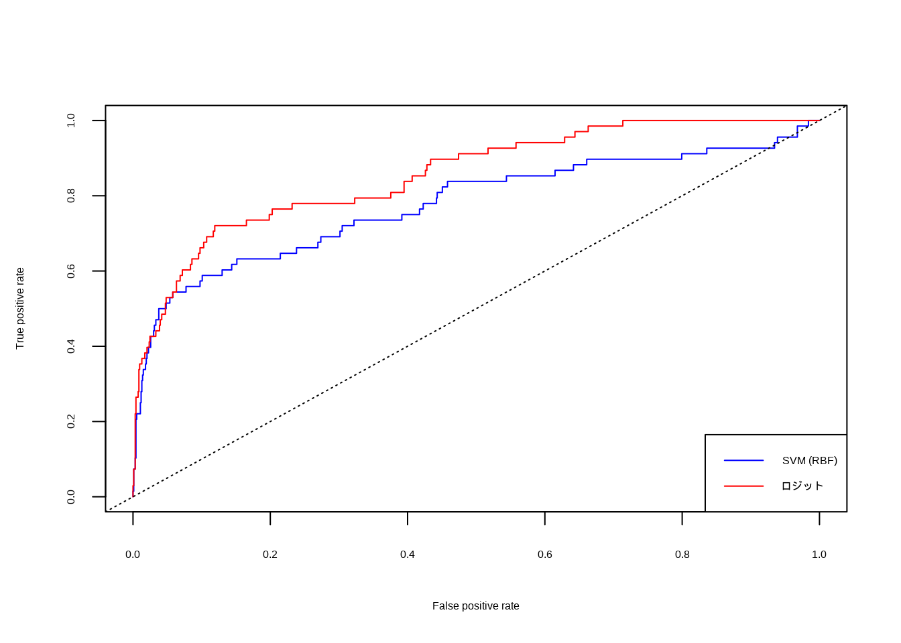
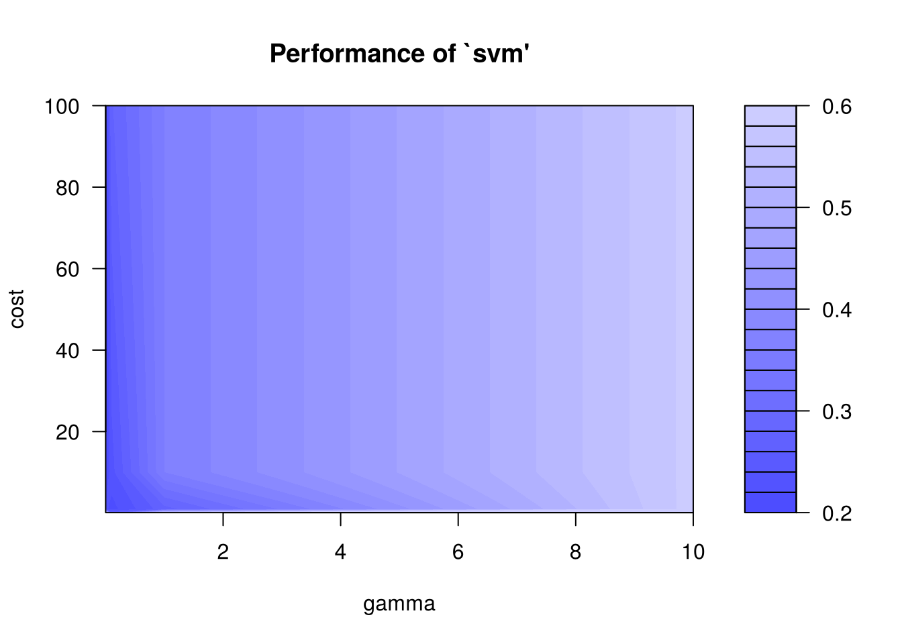
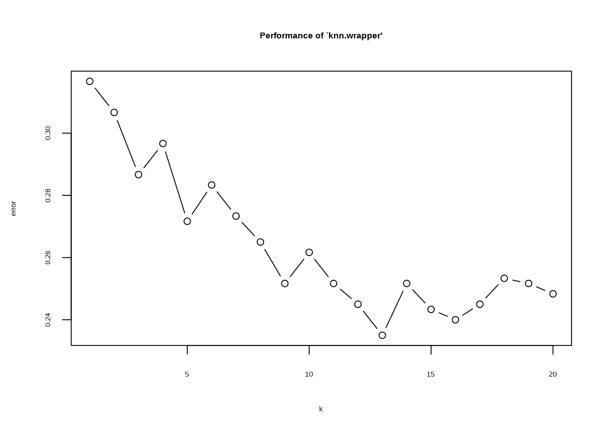

Chapter 11 サポートベクターマシン (SVM)
本章の内容は, 授業の R 演習スクリプト R_SVM_dist.R に対応する.
サポートベクターマシン (SVM) は, 説明変数の空間を分割する決定境界を データから直接推定するアプローチである識別モデル (discriminative model) と呼ばれる クラス分類手法の一つである.
SVMは, 原理的には, 2クラス分類問題に対して適用される. 多クラス分類問題に対しては, 複数の2クラス問題に分割し, 各々にSVMを適合して得られた個々の分類結果を統合する形で解決を図る.
SVMは, 多次元の説明変数の空間上に布置された2クラスの点の集合に対して, “マージン” (境界面から一番近い点までの距離) が最大となるという意味において, 2グループができるだけうまく分離されるような平面 (境界面) を引くことを試みる. その際, 完全な分離ではなく, 分類の失敗 (誤判別) やマージン違反を許容するような 平面を引く. 許容の程度はハイパーパラメータ (コスト \(C\)) を通じて分析者がSVMに与える.
また, SVMは, カーネル関数を上手に選択することで, 説明変数空間における 境界面がドーナツ型を含む非線形な形状をしているようなケースにも柔軟に対応することができる.
どのように非線形なケースに対応するかについてその原理を大雑把に述べると,
- 数学的には, 再生核ヒルベルト空間 (RKHS) の理論に基づいている
- データ点が配置されている元の空間から, 非線形な写像によって高次元 (または無限次元) の空間へ写される
- その高次元の空間で, 線形な平面 (超平面) を引いて分割する
- すると, 元の空間では非線形な分割がなされている (非線形SVM)
- 各データ点を高次元の空間に写す非線形な変換を, 実際に計算する必要はない
- よって, 非線形な変換のことは忘れて (無視して), カーネル関数を選べば良い (“カーネルトリック”)
ちなみに, 本章では扱わないが, SVMは, 回帰問題にも応用することができる (サポートベクター回帰). そこでは, やはりカーネル関数をうまく選択することで説明変数の元の空間内では非線形な形状の回帰曲面を得ることができる. また, 分類問題におけるマージン違反の許容に対応するものとして, 最小二乗法の代わりに, 回帰残差の絶対値が閾値以上のもののみを損失として数える損失関数を最小化する問題を解いている.
なお, SVMにおいても, 学習データに対するモデルの過剰・過小学習を避けるには, 交差検証などによりハイパーパラメータのチューニングを適切に行う必要がある.
本章では, SVMの中でも, 恐らくもっともポピュラーな (Gaussian) RBFカーネルを中心に説明する.
パッケージkernlabの関数ksvm(), e1071のsvm()を用いる.
データ: 社債発行体の格付 (第4回と同じデータ)
rating.csv: 600社 (仮想データ)
- rating: 格付 (A, BBB, HY)
- mcap: 時価総額 (億円), debt_ebitda: 有利子負債/EBITDA (倍)
- int_coverage: インタレスト・カバレッジ (倍), roa (%), equity_ratio (%), equity_vol (%)11.1 SVM (RBFカーネル) の特徴の確認
SVM の特徴を理解するため, BBB と HY の2クラス, 説明変数2つ (log_mcap, debt_ebitda) に絞って分析する.
データ点が多いと, ハイパーパラメータを変えたときの境界の形の変化が見えにくいので, 100社を無作為に抽出して使う.
rt1 <- subset(rating, rating != "A", select = c(log_mcap, debt_ebitda, rating))
rt1$rating <- droplevels(rt1$rating)
set.seed(1)
rt1 <- rt1[sample(nrow(rt1), 100), ]
table(rt1$rating)
#>
#> BBB HY
#> 65 35SVMの実行
パッケージkernlab, 関数ksvm()を使用する.
library(kernlab)
rt_ksvm <- ksvm(rating ~ ., data = rt1) # デフォルト (kpar = 'automatic')
rt_ksvm # サポートベクターの数, 学習誤差
#> Support Vector Machine object of class "ksvm"
#>
#> SV type: C-svc (classification)
#> parameter : cost C = 1
#>
#> Gaussian Radial Basis kernel function.
#> Hyperparameter : sigma = 0.831228198679164
#>
#> Number of Support Vectors : 64
#>
#> Objective Function Value : -49.0948
#> Training error : 0.19
table(予測 = predict(rt_ksvm, rt1[, 1:2]), 実績 = rt1$rating)
#> 実績
#> 予測 BBB HY
#> BBB 59 13
#> HY 6 22
plot(rt_ksvm, data = rt1[, 1:2])
予測変数が2つの2値分類なので, 境界を可視化できる.
図の色は判別関数の値で, 白い帯 (値が0付近) が分離境界にあたる.
記号の違い (○ と △) がクラスを, 塗りつぶされた点がサポートベクターを表す.
なお, kpar = "automatic" では, sigma の値がデータから乱数を使って自動的に決められる.
ハイパーパラメータ (sigma, C) の値を変えて実行してみる.
kernlab の sigma は, スライドの RBF カーネルの \(\gamma\) に相当する.
rt_ksvm <- ksvm(rating ~ ., data = rt1, kpar = list(sigma = 10)) # → より複雑な境界
rt_ksvm
#> Support Vector Machine object of class "ksvm"
#>
#> SV type: C-svc (classification)
#> parameter : cost C = 1
#>
#> Gaussian Radial Basis kernel function.
#> Hyperparameter : sigma = 10
#>
#> Number of Support Vectors : 81
#>
#> Objective Function Value : -44.023
#> Training error : 0.08
plot(rt_ksvm, data = rt1[, 1:2])
rt_ksvm <- ksvm(rating ~ ., data = rt1, kpar = list(sigma = 0.1)) # → より大雑把な境界
rt_ksvm
#> Support Vector Machine object of class "ksvm"
#>
#> SV type: C-svc (classification)
#> parameter : cost C = 1
#>
#> Gaussian Radial Basis kernel function.
#> Hyperparameter : sigma = 0.1
#>
#> Number of Support Vectors : 62
#>
#> Objective Function Value : -55.7124
#> Training error : 0.25
plot(rt_ksvm, data = rt1[, 1:2])
sigma が大きいと, 各データ点の影響が及ぶ範囲が狭くなり, 学習データに細かく合わせた複雑な境界になる (過学習しやすい).
sigma が小さいと, 滑らかで大雑把な境界になる.
rt_ksvm <- ksvm(rating ~ ., data = rt1, kpar = list(sigma = 0.1), C = 10) # → より少ない SV
rt_ksvm
#> Support Vector Machine object of class "ksvm"
#>
#> SV type: C-svc (classification)
#> parameter : cost C = 10
#>
#> Gaussian Radial Basis kernel function.
#> Hyperparameter : sigma = 0.1
#>
#> Number of Support Vectors : 54
#>
#> Objective Function Value : -496.0492
#> Training error : 0.24
rt_ksvm <- ksvm(rating ~ ., data = rt1, kpar = list(sigma = 0.1), C = 0.01) # → より多くの SV
rt_ksvm
#> Support Vector Machine object of class "ksvm"
#>
#> SV type: C-svc (classification)
#> parameter : cost C = 0.01
#>
#> Gaussian Radial Basis kernel function.
#> Hyperparameter : sigma = 0.1
#>
#> Number of Support Vectors : 71
#>
#> Objective Function Value : -0.6978
#> Training error : 0.35
plot(rt_ksvm, data = rt1[, 1:2])
C は誤判別・マージン違反に対するコストである.
C が小さいと, マージン違反を大目に見る代わりにマージンを広く取るので, サポートベクターが多くなる.
C = 0.01 では, ほとんどの点がサポートベクターとなり, 全ての点を多数派のクラス (BBB) に判別している.
C が大きいと, マージン違反を厳しく罰するので, マージンは狭く, サポートベクターは少なくなる.
自主課題
sigma と C の組合せを変えて, 境界の形やサポートベクターの数, 学習誤差がどう変わるか試してみよう.
11.2 2値分類: クレジットカードの延滞
データ: クレジットカードの延滞 (仮想データ)
card_default.csv: 3,000件 (仮想データ)
- default: 延滞 (yes / no) (目的変数)
- limit: 利用枠 (万円), util: 利用率 (%), delay: 直近6か月の支払遅延回数 (回),
- age: 年齢, income: 年収 (万円), cash_ratio: キャッシング比率 (%),
- tenure: 会員年数 (年), n_cards: 保有カード枚数
※ 利用率が一定水準を超えると延滞が急増する, 年齢の影響がU字型, などの非線形な関係を含むcard <- read.csv("class/card_default.csv", stringsAsFactors = TRUE)
card$default <- factor(card$default, levels = c("no", "yes"))
table(card$default)
#>
#> no yes
#> 2804 196
set.seed(50)
train_idx <- sample(nrow(card), round(nrow(card) * 2/3))
card_train <- card[train_idx, ]
card_test <- card[-train_idx, ]SVMの実行
ksvm() の主な引数:
- kernel: "rbfdot" (Gaussian RBF, デフォルト), "vanilladot" (線形), "polydot" (多項式)
- C: コスト (デフォルト 1), kpar: カーネルのパラメータ (rbfdot では sigma)
- cross: k-分割交差検証による誤差の推定
- prob.model = TRUE: クラス所属確率も計算
注) 説明変数は, デフォルトで標準化される (scaled = TRUE)# 線形カーネル
(card_lin <- ksvm(default ~ ., data = card_train, kernel = "vanilladot", C = 1, cross = 3,
prob.model = TRUE))
#> Setting default kernel parameters
#> maximum number of iterations reached 0.01081129 0.01002182
#> Support Vector Machine object of class "ksvm"
#>
#> SV type: C-svc (classification)
#> parameter : cost C = 1
#>
#> Linear (vanilla) kernel function.
#>
#> Number of Support Vectors : 307
#>
#> Objective Function Value : -256
#> Training error : 0.064
#> Cross validation error : 0.064002
#> Probability model included.
pred_lin <- predict(card_lin, card_test)
(tab_lin <- table(予測 = pred_lin, 実績 = card_test$default))
#> 実績
#> 予測 no yes
#> no 932 68
#> yes 0 0# RBF カーネル
(card_rbf <- ksvm(default ~ ., data = card_train, kernel = "rbfdot", C = 1, cross = 3,
prob.model = TRUE))
#> Support Vector Machine object of class "ksvm"
#>
#> SV type: C-svc (classification)
#> parameter : cost C = 1
#>
#> Gaussian Radial Basis kernel function.
#> Hyperparameter : sigma = 0.100346733594059
#>
#> Number of Support Vectors : 360
#>
#> Objective Function Value : -230.4993
#> Training error : 0.0505
#> Cross validation error : 0.062497
#> Probability model included.
pred_rbf <- predict(card_rbf, card_test)
(tab_rbf <- table(予測 = pred_rbf, 実績 = card_test$default))
#> 実績
#> 予測 no yes
#> no 928 61
#> yes 4 7library(caret)
confusionMatrix(tab_rbf, positive = "yes", mode = "prec_recall")
#> Confusion Matrix and Statistics
#>
#> 実績
#> 予測 no yes
#> no 928 61
#> yes 4 7
#>
#> Accuracy : 0.935
#> 95% CI : (0.9179, 0.9495)
#> No Information Rate : 0.932
#> P-Value [Acc > NIR] : 0.383
#>
#> Kappa : 0.1613
#>
#> Mcnemar's Test P-Value : 3.759e-12
#>
#> Precision : 0.6364
#> Recall : 0.1029
#> F1 : 0.1772
#> Prevalence : 0.0680
#> Detection Rate : 0.0070
#> Detection Prevalence : 0.0110
#> Balanced Accuracy : 0.5493
#>
#> 'Positive' Class : yes
#> 線形カーネルの SVM は, 全員を「延滞しない (no)」と予測している.
RBF カーネルの正解率 (Accuracy) は高く見えるが, 延滞は全体の7%程度しかないので, 全員を「延滞しない」と予測するだけでも正解率は約93%になる (No Information Rate).
延滞 (yes) の再現率 (Recall) も合わせて確認する必要がある.
出力オブジェクトから, 各種の値を取り出すことができる.
ROC 曲線と AUC
延滞確率をスコアとして, しきい値によらない比較を行う. 比較のため, ロジット回帰も推定する.
library(ROCR)
auc <- function(score, y) performance(prediction(score, y), "auc")@y.values[[1]]
p_lin <- predict(card_lin, card_test, type = "probabilities")[, "yes"]
p_rbf <- predict(card_rbf, card_test, type = "probabilities")[, "yes"]
p_glm <- predict(glm(default ~ ., family = binomial, data = card_train), card_test,
type = "response")
round(c(SVM_linear = auc(p_lin, card_test$default), SVM_rbf = auc(p_rbf, card_test$default),
logit = auc(p_glm, card_test$default)), 3)
#> SVM_linear SVM_rbf logit
#> 0.716 0.777 0.856
plot(performance(prediction(p_rbf, card_test$default), "tpr", "fpr"), col = "blue")
plot(performance(prediction(p_glm, card_test$default), "tpr", "fpr"), col = "red",
add = TRUE)
abline(0, 1, lty = 3)
legend("bottomright", legend = c("SVM (RBF)", "ロジット"), col = c("blue", "red"),
lty = 1)
線形カーネルより RBF カーネルの方が AUC は高いが, このデータではロジット回帰の AUC が最も高い. 表形式 (構造化) データでは, SVM が常に最良とは限らない. 複数の手法を比較することが大切である.
自主課題
ハイパーパラメータ (C, sigma) を変えて, AUC や再現率がどう変わるか試してみよう.
11.3 3値分類: 格付
全ての財務指標を使って, A / BBB / HY の3クラスを判別する.
ksvm() は, クラス数が3以上の場合, One-versus-One (OvO) 法 (全てのクラスの組合せについて2値分類の SVM を学習し, 多数決で判別) で分類する.
set.seed(1)
train_idx <- sample(nrow(rating), 400)
fo <- rating ~ log_mcap + debt_ebitda + log_icr + roa + equity_ratio + equity_vol
rt_train <- rating[train_idx, ]
rt_test <- rating[-train_idx, ]
for (s in c(0.01, 0.1, 1)) for (C in c(0.1, 1, 10)) {
m <- ksvm(fo, data = rt_train, kpar = list(sigma = s), C = C)
acc <- mean(predict(m, rt_test) == rt_test$rating)
cat(sprintf("sigma = %5.2f, C = %5.1f: SV数 = %3d, テスト正解率 = %.3f\n",
s, C, m@nSV, acc))
}
#> sigma = 0.01, C = 0.1: SV数 = 400, テスト正解率 = 0.405
#> sigma = 0.01, C = 1.0: SV数 = 343, テスト正解率 = 0.785
#> sigma = 0.01, C = 10.0: SV数 = 242, テスト正解率 = 0.785
#> sigma = 0.10, C = 0.1: SV数 = 374, テスト正解率 = 0.755
#> sigma = 0.10, C = 1.0: SV数 = 260, テスト正解率 = 0.785
#> sigma = 0.10, C = 10.0: SV数 = 209, テスト正解率 = 0.765
#> sigma = 1.00, C = 0.1: SV数 = 386, テスト正解率 = 0.390
#> sigma = 1.00, C = 1.0: SV数 = 358, テスト正解率 = 0.760
#> sigma = 1.00, C = 10.0: SV数 = 365, テスト正解率 = 0.720自主課題 第8章の LDA / QDA の正解率と比べてみよう.
11.4 代替パッケージ e1071 の利用
パッケージe1071の関数svm() (ISLR2 の Lab でも使用) でも, SVM を実行できる.
RBF カーネルのハイパーパラメータは, gamma と cost である.
library(e1071)
rt_svm <- svm(fo, data = rt_train, kernel = "radial", cost = 10, gamma = 0.1)
summary(rt_svm)
#>
#> Call:
#> svm(formula = fo, data = rt_train, kernel = "radial", cost = 10,
#> gamma = 0.1)
#>
#>
#> Parameters:
#> SVM-Type: C-classification
#> SVM-Kernel: radial
#> cost: 10
#>
#> Number of Support Vectors: 209
#>
#> ( 62 100 47 )
#>
#>
#> Number of Classes: 3
#>
#> Levels:
#> A BBB HY
table(予測 = predict(rt_svm, rt_test), 実績 = rt_test$rating)
#> 実績
#> 予測 A BBB HY
#> A 56 9 0
#> BBB 18 58 11
#> HY 0 9 39説明変数が3つ以上の場合でも, 2変数の平面に限って境界を可視化できる (他の変数は slice で指定した値に固定する).
plot(rt_svm, rt_train, debt_ebitda ~ log_mcap, slice = list(log_icr = log(10), roa = 4,
equity_ratio = 45, equity_vol = 30))
不均衡データへの対応: クラスの重み
引数 class.weights で, 延滞 (yes) を見逃すコストを大きくすると, 延滞の再現率が上がる.
card_w <- svm(default ~ ., data = card_train, kernel = "radial", class.weights = c(no = 1,
yes = 5))
table(予測 = predict(card_w, card_test), 実績 = card_test$default)
#> 実績
#> 予測 no yes
#> no 887 39
#> yes 45 29前節の RBF カーネル (重みなし) と比べると, 延滞を正しく予測できる件数が増える代わりに, 延滞しない顧客を延滞と誤って予測する件数も増える.
11.5 ハイパーパラメータのチューニング
パッケージe1071内の関数tune()を使用する (デフォルト: 10-分割交差検証, 誤分類率で評価).
set.seed(1)
tune_svm <- tune(svm, fo, data = rt_train, ranges = list(gamma = 10^(-3:1), cost = 10^(-1:2)))
summary(tune_svm)
#>
#> Parameter tuning of 'svm':
#>
#> - sampling method: 10-fold cross validation
#>
#> - best parameters:
#> gamma cost
#> 0.001 100
#>
#> - best performance: 0.2025
#>
#> - Detailed performance results:
#> gamma cost error dispersion
#> 1 1e-03 0.1 0.5900 0.05916080
#> 2 1e-02 0.1 0.5800 0.06213784
#> 3 1e-01 0.1 0.2675 0.07075977
#> 4 1e+00 0.1 0.5875 0.06263873
#> 5 1e+01 0.1 0.5900 0.05916080
#> 6 1e-03 1.0 0.5800 0.06213784
#> 7 1e-02 1.0 0.2250 0.06972167
#> 8 1e-01 1.0 0.2125 0.05303301
#> 9 1e+00 1.0 0.2725 0.07678433
#> 10 1e+01 1.0 0.5900 0.05552777
#> 11 1e-03 10.0 0.2225 0.06503204
#> 12 1e-02 10.0 0.2050 0.04972145
#> 13 1e-01 10.0 0.2325 0.06460349
#> 14 1e+00 10.0 0.3600 0.09442810
#> 15 1e+01 10.0 0.5875 0.05034602
#> 16 1e-03 100.0 0.2025 0.04158325
#> 17 1e-02 100.0 0.2100 0.03162278
#> 18 1e-01 100.0 0.2775 0.05197489
#> 19 1e+00 100.0 0.3600 0.08676277
#> 20 1e+01 100.0 0.5875 0.05034602
plot(tune_svm) # CV 誤差のヒートマップ
bestmod_svm <- tune_svm$best.model # 最適なハイパーパラメータでのモデル
summary(bestmod_svm)
#>
#> Call:
#> best.tune(METHOD = svm, train.x = fo, data = rt_train, ranges = list(gamma = 10^(-3:1),
#> cost = 10^(-1:2)))
#>
#>
#> Parameters:
#> SVM-Type: C-classification
#> SVM-Kernel: radial
#> cost: 100
#>
#> Number of Support Vectors: 239
#>
#> ( 69 118 52 )
#>
#>
#> Number of Classes: 3
#>
#> Levels:
#> A BBB HY
mean(predict(bestmod_svm, rt_test) == rt_test$rating) # テスト正解率
#> [1] 0.785tune() の使い方のヒント:
- 引数 tunecontrol の値を関数 tune.control() で設定できる
- 例: tunecontrol = tune.control(sampling = "boot")
sampling: "cross" (交差検証, デフォルト), "boot" (ブートストラップ), "fix" (1回だけ分割)e1071 内にあるチューニング用の便利な関数群
e1071には, tune()のラッパー関数として, tune.svm(), tune.rpart(), tune.randomForest(), tune.knn() 等がある.
予測変数と目的変数を個別に指定する (x = ..., y = ...) 関数と, モデル式 (y ~ x) で指定する関数があるので注意する.
- kNN法:
kの探索範囲を指定
x <- scale(rating[, c("log_mcap", "debt_ebitda", "log_icr", "roa", "equity_ratio",
"equity_vol")])
y <- rating$rating
set.seed(1)
res_tune_knn <- tune.knn(x, y, k = 1:20, tunecontrol = tune.control(sampling = "cross"))
summary(res_tune_knn)
#>
#> Parameter tuning of 'knn.wrapper':
#>
#> - sampling method: 10-fold cross validation
#>
#> - best parameters:
#> k
#> 13
#>
#> - best performance: 0.235
#>
#> - Detailed performance results:
#> k error dispersion
#> 1 1 0.3166667 0.05826716
#> 2 2 0.3066667 0.04245550
#> 3 3 0.2866667 0.04430534
#> 4 4 0.2966667 0.07149204
#> 5 5 0.2716667 0.05668300
#> 6 6 0.2833333 0.05931710
#> 7 7 0.2733333 0.05993824
#> 8 8 0.2650000 0.06547547
#> 9 9 0.2516667 0.06452581
#> 10 10 0.2616667 0.05033836
#> 11 11 0.2516667 0.04040688
#> 12 12 0.2450000 0.05155005
#> 13 13 0.2350000 0.05468767
#> 14 14 0.2516667 0.03804643
#> 15 15 0.2433333 0.06146363
#> 16 16 0.2400000 0.06858355
#> 17 17 0.2450000 0.05094781
#> 18 18 0.2533333 0.06176419
#> 19 19 0.2516667 0.06158904
#> 20 20 0.2483333 0.07472171
plot(res_tune_knn)
- 回帰木:
rpart()のminsplit(分割に必要な最小観測数) を探索 (社債スプレッドのデータ. 第5章の GAM と同じデータ)
bond <- read.csv("class/bond_spread.csv", stringsAsFactors = TRUE)
set.seed(1)
res_tune_rpart <- tune.rpart(spread ~ ., data = bond, minsplit = c(5, 10, 20, 40))
summary(res_tune_rpart)
#>
#> Parameter tuning of 'rpart.wrapper':
#>
#> - sampling method: 10-fold cross validation
#>
#> - best parameters:
#> minsplit
#> 10
#>
#> - best performance: 753.6763
#>
#> - Detailed performance results:
#> minsplit error dispersion
#> 1 5 812.2222 361.7244
#> 2 10 753.6763 320.0165
#> 3 20 819.3848 330.3632
#> 4 40 822.3780 309.1370
plot(res_tune_rpart)
アルゴリズムごとにハイパーパラメータが異なるため, 正しい設定には, 各関数のマニュアルの確認が必要である. ハイパーパラメータのチューニングは, パッケージcaretやtidymodelsでも実行できる.